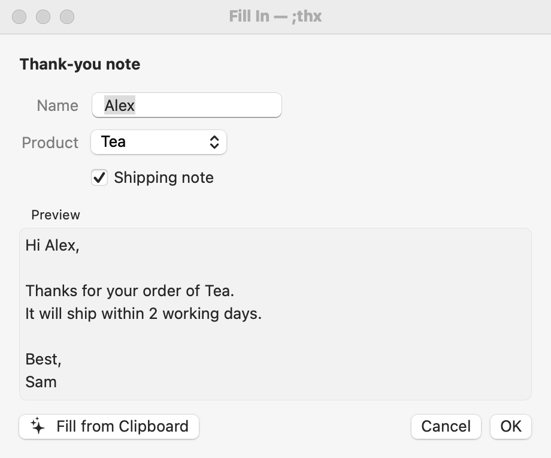

Fill-ins
Fill-ins turn a fixed snippet into a template. When it expands, a small window asks for the parts that change each time: a name, an amount, a choice.
An example
Create a snippet with the abbreviation ;thx, the label Thank-you note, and this content:
Hi %filltext:name=Name:default=there%,
Thanks for your order of %fillpopup:name=Product:Coffee beans:default=Tea:Mugs%.
%fillpart:name=Shipping note:default=yes%It will ship within 2 working days.%fillpartend%
Best,
JohnType ;thx and a space. This window appears near your cursor:

To finish:
- Type or choose a value for each field. The first text field is ready for typing.
- Watch the Preview update as you go.
- Click OK or press Return to insert the text. Click Cancel or press Esc to give up; your abbreviation stays as you typed it.
Your other abbreviations work inside the fill-in window too, so you can expand a snippet into a field.
The four kinds of field
Add them from the snippet editor’s Insert ▸ Fill-ins menu, or type them.
| Menu item | Code | In the window |
|---|---|---|
| Single Line Field | %filltext:name=City:default=London% | A one-line text box. |
| Multi-line Field | %fillarea:name=Notes:height=5% | A larger box for several lines. |
| Popup Menu | %fillpopup:name=Tone:Formal:default=Friendly:Brief% | A menu of choices, separated by colons. default= marks the one chosen at first; otherwise it’s the first option. |
| Optional Section | %fillpart:name=PS:default=yes%P.S. See you Friday!%fillpartend% | A checkbox. The text between the codes is included only when it’s ticked. Use default=yes to tick it at first. |
Field settings
name=is the label shown in the window. Unnamed fields are labelled Text, Choice or Include.default=is the starting value.width=sets the box width in characters (text fields and multi-line boxes);height=sets the number of lines (multi-line boxes only).- Separate settings with colons. Values can’t contain a colon or a percent sign.
Use the same value twice
Fields with the same name share one value; you only fill it in once. This works across nested snippets too.
Dear %filltext:name=Client%,
…
I look forward to working with you, %filltext:name=Client%.Use fill-in values in sums, conditions and AI
Inside %calc, %if and %ai, write {Field name} to use a field’s value:
%filltext:name=qty:default=1% × $%filltext:name=price:default=20%
Total: $%calc:{qty}*{price}:2%
%if:{qty}>10%Bulk discount applied.%endif%See Calculations & Conditions and AI in snippets.
%filltop%
%filltop% (Insert ▸ Fill-ins ▸ Show at Top) opens the fill-in window at the top centre of the screen instead of next to your text cursor. Use it when the window would cover what you need to see.